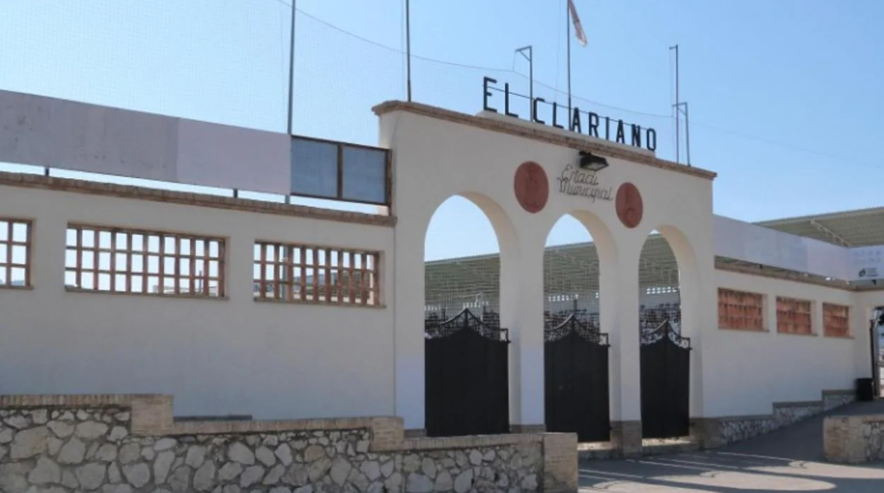

El Estadio El Clariano es el corazón del fútbol en Ontinyent, un recinto deportivo lleno de historia y pasión. Inaugurado en 1951, El Clariano ha sido el hogar del Ontinyent CF, un club con una rica tradición en el fútbol español.
Situado en un entorno natural privilegiado, con vistas a la Sierra de Mariola, el estadio ofrece una experiencia única tanto para los jugadores como para los aficionados.
Con una capacidad para aproximadamente 5.000 espectadores, El Clariano destaca por su atmósfera acogedora e intensa, donde la cercanía de las gradas al terreno de juego permite vivir cada partido con gran intensidad. El estadio cuenta con una tribuna principal cubierta y gradas laterales que envuelven el campo, creando un ambiente íntimo y cercano.
A lo largo de los años, El Clariano ha sido testigo de innumerables momentos memorables y es un símbolo del orgullo deportivo de la ciudad. Su césped natural, cuidadosamente mantenido, es el escenario donde se han forjado muchas historias de esfuerzo, entrega y éxito. El Clariano no es solo un estadio, sino un lugar de encuentro para la comunidad de Ontinyent, un espacio donde el deporte y la tradición se entrelazan para crear una experiencia inigualable.